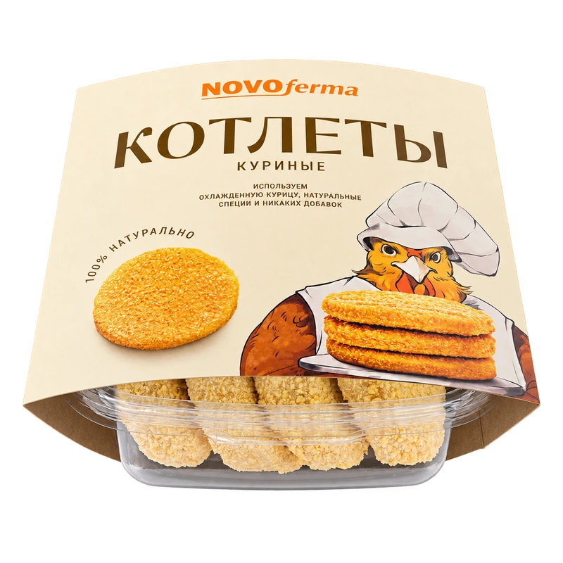
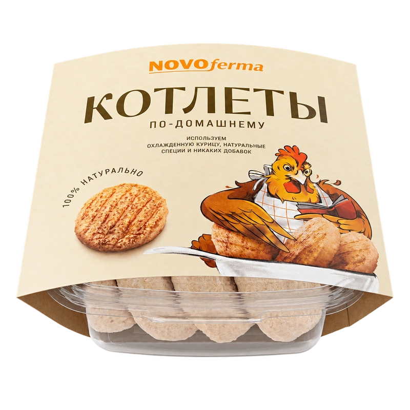
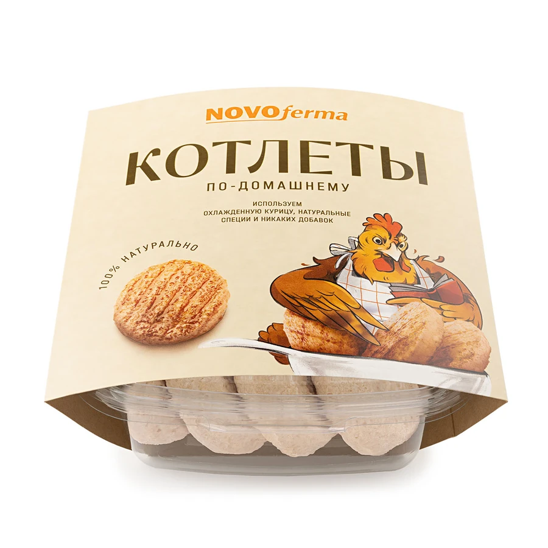

Котлеты и биточки / Из курицы
Котлеты по-домашнему

Масса нетто480 г
ПродуктЗамороженный
УпаковкаКонтейнер
Состав и приготовление
Перед покупкой проверьте состав и способ приготовления на актуальной этикетке. Если упаковки нет под рукой, запросите подробности у нашей команды.
Запросить информациюФото из каталога производителя

Внешний вид и сведения на упаковке могут обновляться. Перед покупкой сверяйте этикетку выбранного товара.